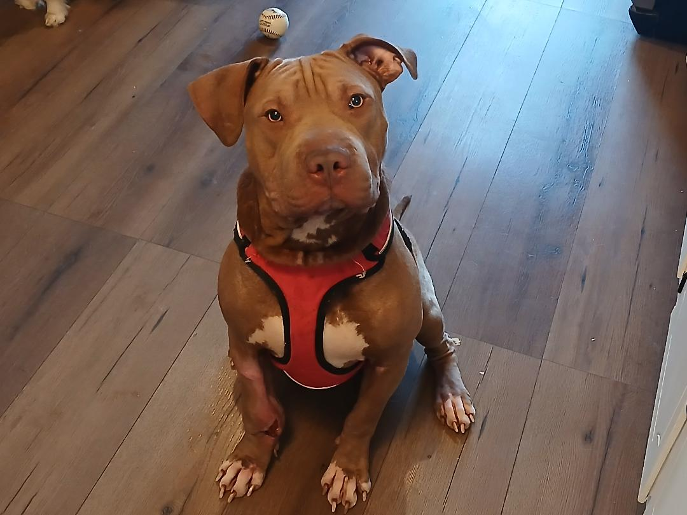
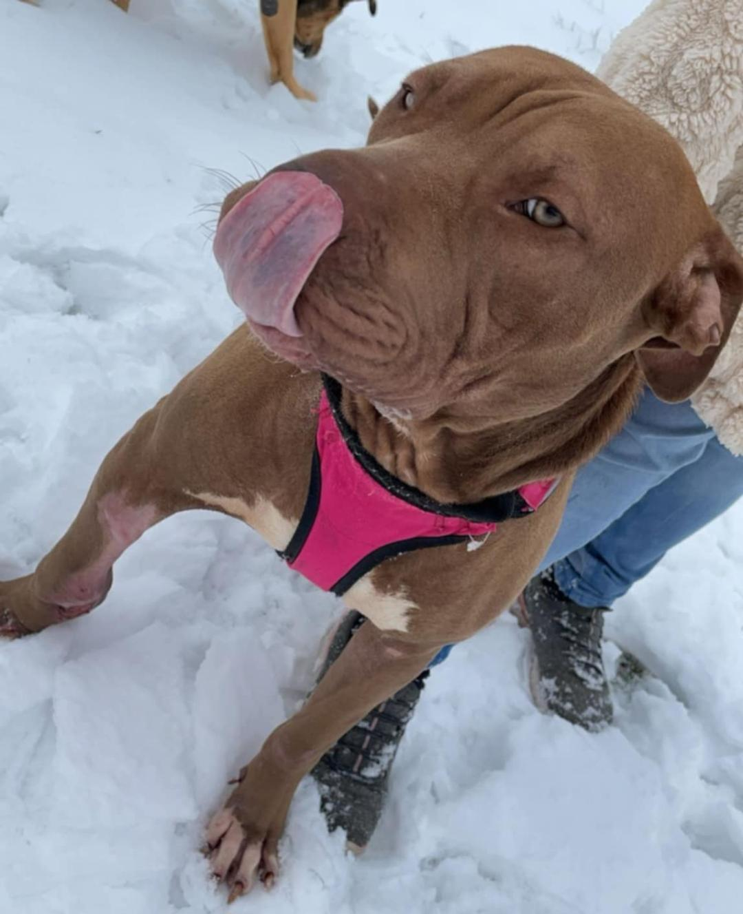

The Importance of Fostering Aminals: Charlie

All About Charlie
Charlie is a 5 year old large Pit Bull mix. He weighs 68 lbs and is the biggest baby you will ever meet. He enjoys jumping, running, and playing and even more curious than the average cat. Even though he isn’t a pup anymore, Charlie still has enough energy to tire out a toddler and needs room to run on a daily basis. One of the greatest things about Charlie is that he is the most gentlest of giants. He loves young kids and knows how to be a calm and well behaved dog when they are around.
What Happened?
I have had Charlie since November 25, 2024. I know this is longer than the typical length of time for a foster animal but he was found with a massive leg injury in early October. He spent 6 weeks cooped up at the animal hospital in Winchester where he got well enough to be sent to a foster home for the rest of his recuperation. He still has a few weeks left before his leg is completely healed but we are already reaching out to people who want to be potential adopters.
How I work with Charlie
Charlie needs medical care on a daily basis until his leg wound is completely closed. He has moved on from daily hydrotherapy and pain medication to just a warm compress twice a day. I use positive reinforcement (treats, praise, and cuddles) for his behavior which I have found to be really effective when it comes to larger dogs. However, I have to give Charlie most of the credit for how far he has come. He is extremely smart and learns really fast.